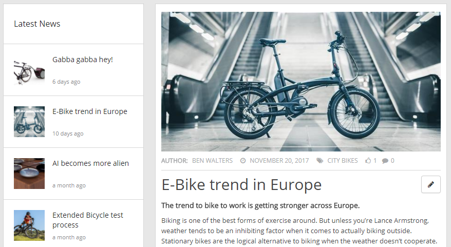
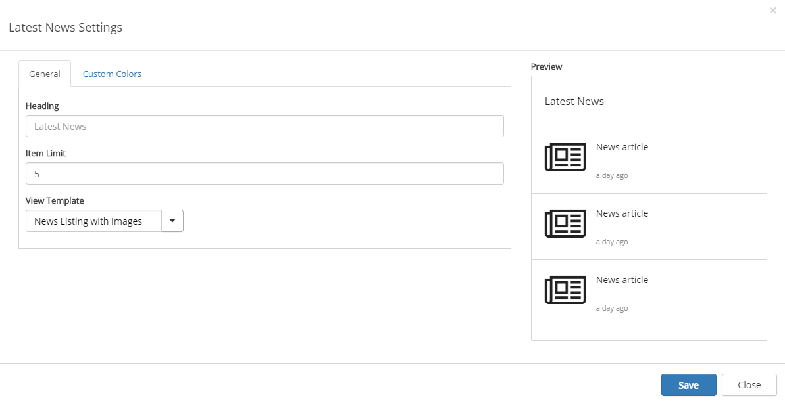
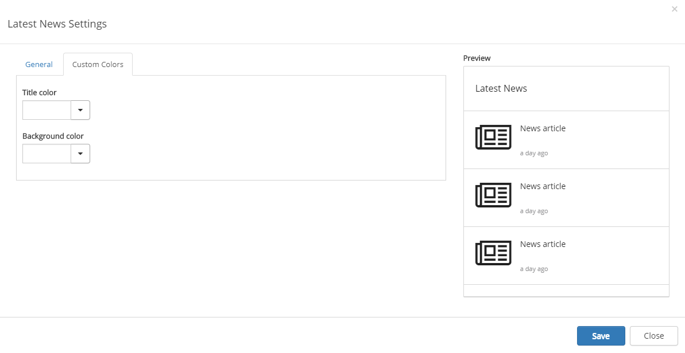

The Latest News control displays the latest news published, when reading a news article.

To change the settings for the control, activate the edit switch and click the settings gear.
This will open the settings dialog.

On the General tab you can set the following:
You should primarily set colors through Theme colors in Omnia Admin (System/Settings/Default colors). If you still would like custom colors for the control, you can set them using this tab.
